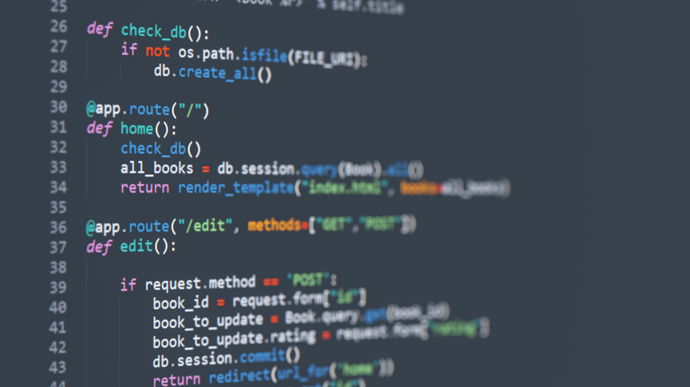

HTML
Semantic HTML elements were used to organize content and improve accessibility.
This project explores the relationship between GDP per capita and happiness scores across countries using data analysis and visualization.
I chose this topic because economic growth is often used as the main indicator of a country's success. However, happiness and quality of life depend on many additional factors such as social support, healthcare, freedom, and trust.
Through this project, I wanted to better understand how data analysis can help explain human well-being beyond financial wealth.

Semantic HTML elements were used to organize content and improve accessibility.
CSS Grid, Flexbox, responsive layouts, and media queries were used to create a modern website design.
JavaScript was used to create interactive features such as dark mode and dynamic content updates.
Python, Pandas, and data visualization techniques were used to analyze GDP and happiness data.